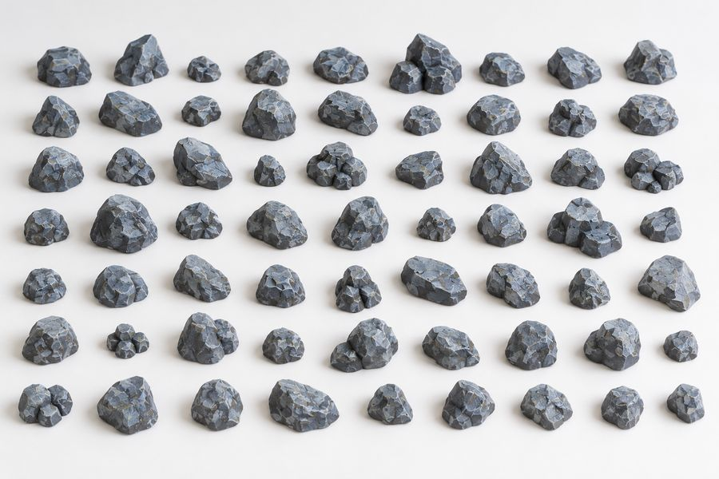
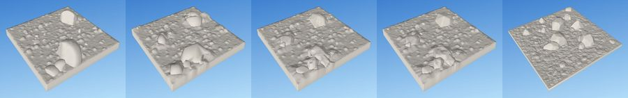
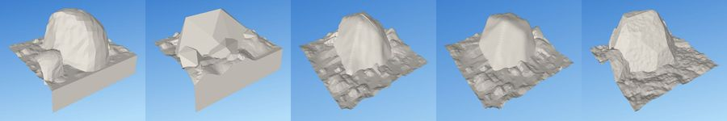
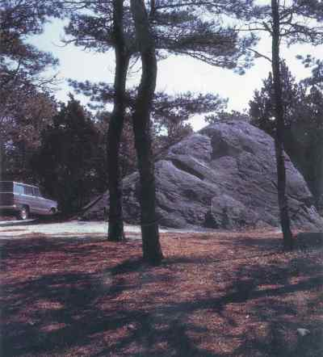
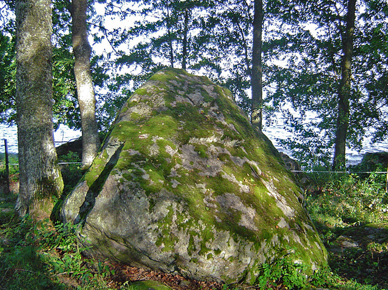
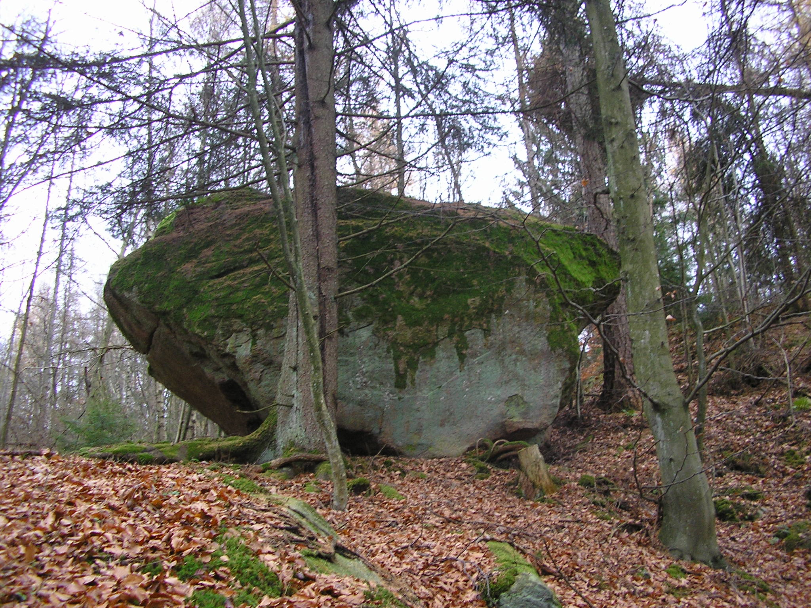
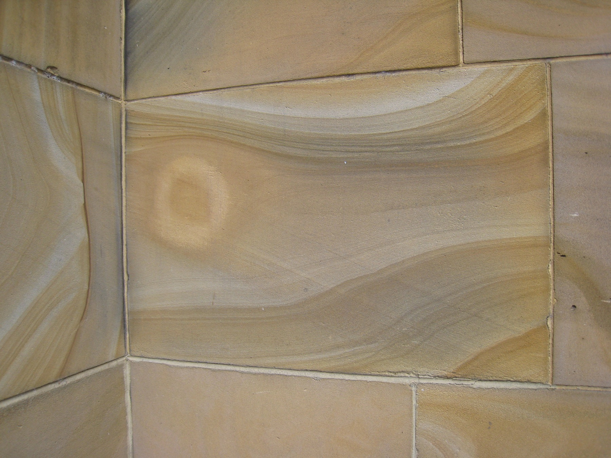
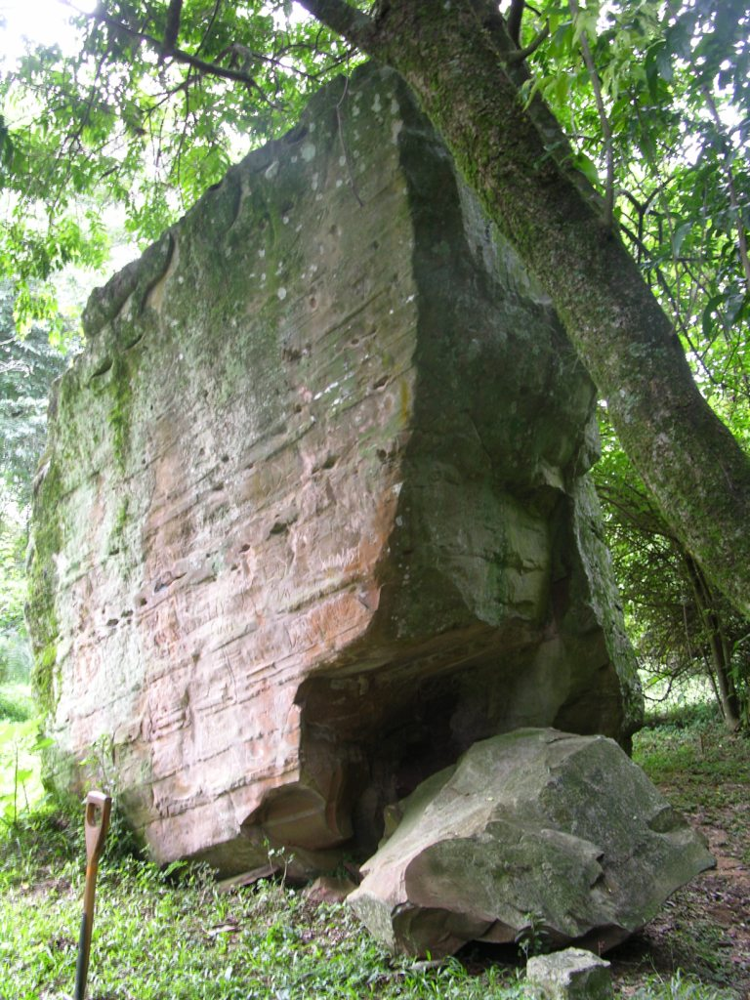
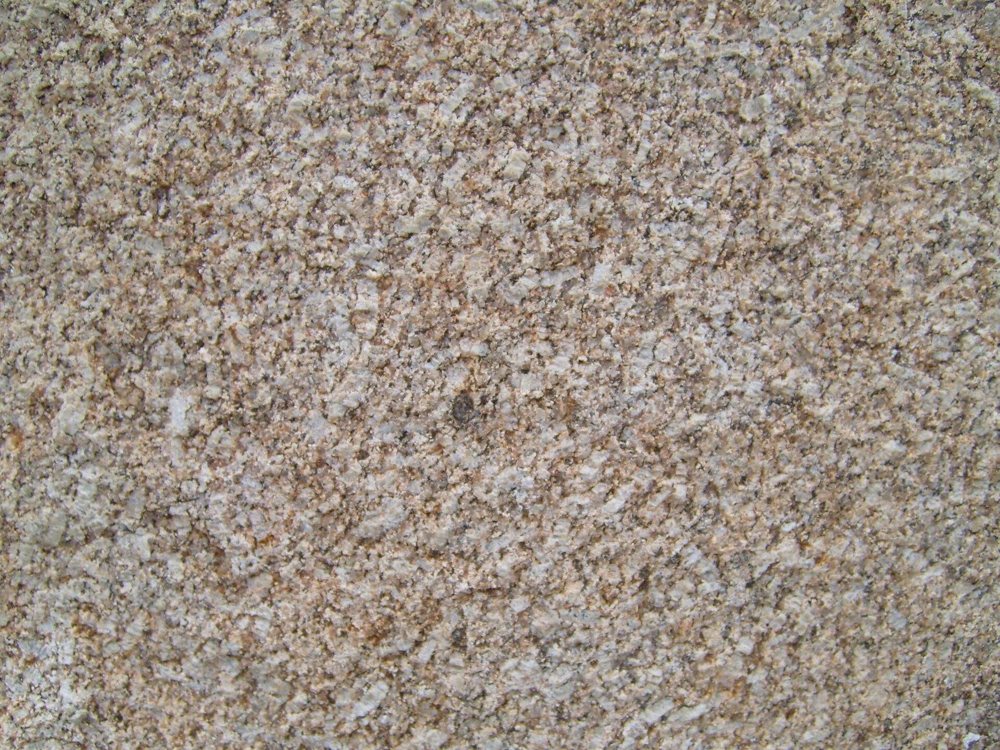
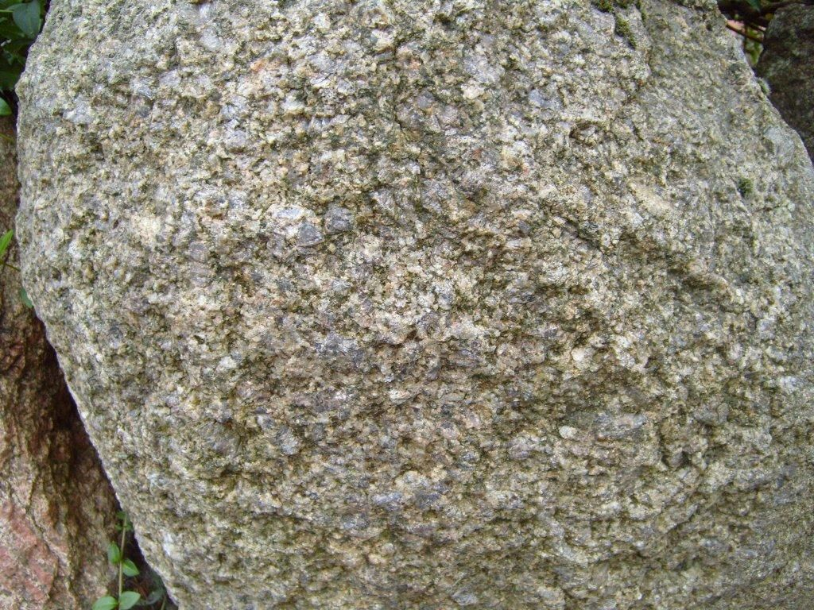

What it looks like
Each rock is broad and flat at the bottom and never wider above the ground than at it, so it sits on the earth rather than perching. A few large facets give it its mass; many small ones break up the corners, like a stone that has been knapped. No two rocks on a tile are copies: each draws its own footprint (round to twice as long as wide), height, profile and facets. About one placement in four is a cluster of two to four stones of different sizes leaning together. The ground between them is bare dirt, with open floor left for miniature bases.
The target is a sheet of about sixty painted miniature rocks:

rocklab/reference/approved-reference.png): chiselled, blue-grey rocks with lighter edge highlights. Colour is paint and out of scope; the shapes are the spec.| Shape | What it is | Share |
|---|---|---|
| dome | A rounded mound, widest at the ground | 35% |
| wedge | A ridge or pyramid whose peak leans to one side | 25% |
| slab | A low, flat-topped stone, about 60% of the usual height | 20% |
| block | A blocky stone on a squarish footprint | 20% |
Using it in a tile
A thing is one of itself. Place one rock with at= (a point in squares; a range is drawn once from the seed), or leave at= out to let it land anywhere in its area:
rock at="0.5,0.5" size="6..10" // one rock, there
rock in=pool // one rock, anywhere in the pool regionMany rocks are a scatter:
tile rocks size="2x2" seed=1 {
stack {
dirt level=edge { stones none }
scatter per-square="2.25..3" gap=1.5 { rock }
}
}Scattered against=cliff, stones and boulders gather at the cliff's foot as scree. Every rock is seated into the ground under it, and grass grows round it wherever the grass is listed.
Reference
in= at=Controls
| Control | Takes | Default | What it does |
|---|---|---|---|
size | mm | 6..15 | rock width |
mostly | word | — | skews the size range
|
shape | word | — | river stones, broken rock, flat slabs
|
wear | word | — | sharp, or chipped and rounded edges not built yet check accepts it; build refuses it
|
buried | percent | — | how much of each rock is under the ground |
In the library
1x1-cliff-corner.dtilelib:tiles/cliffs/1x1-cliff-corner.dtile1x1-cliff-mound.dtilelib:tiles/cliffs/1x1-cliff-mound.dtile1x1-cliff-spire.dtilelib:tiles/cliffs/1x1-cliff-spire.dtile1x1-cliff.dtilelib:tiles/cliffs/1x1-cliff.dtile2x1-cliff-blocks.dtilelib:tiles/cliffs/2x1-cliff-blocks.dtile2x1-cliff-escarpment.dtilelib:tiles/cliffs/2x1-cliff-escarpment.dtile2x1-cliff-needles.dtilelib:tiles/cliffs/2x1-cliff-needles.dtile2x1-cliff-rubble.dtilelib:tiles/cliffs/2x1-cliff-rubble.dtile2x1-cliff.dtilelib:tiles/cliffs/2x1-cliff.dtile2x2-cliff-canyon.dtilelib:tiles/cliffs/2x2-cliff-canyon.dtile2x2-cliff-corner.dtilelib:tiles/cliffs/2x2-cliff-corner.dtile2x2-cliff-massif.dtilelib:tiles/cliffs/2x2-cliff-massif.dtile2x2-cliff-plateau.dtilelib:tiles/cliffs/2x2-cliff-plateau.dtile1x1-water+grass-angle.dtilelib:tiles/water/1x1-water+grass-angle.dtile1x1-water+grass-corner.dtilelib:tiles/water/1x1-water+grass-corner.dtile1x1-water+grass-tree.dtilelib:tiles/water/1x1-water+grass-tree.dtile1x1-water+grass.dtilelib:tiles/water/1x1-water+grass.dtile1x1-water+soil-angle.dtilelib:tiles/water/1x1-water+soil-angle.dtile1x1-water+soil-corner.dtilelib:tiles/water/1x1-water+soil-corner.dtile1x1-water+soil.dtilelib:tiles/water/1x1-water+soil.dtile1x1-water-corridor+grass.dtilelib:tiles/water/1x1-water-corridor+grass.dtile1x1-water-corridor+soil.dtilelib:tiles/water/1x1-water-corridor+soil.dtile1x1-water-corridor-open+grass.dtilelib:tiles/water/1x1-water-corridor-open+grass.dtile1x1-water-corridor-open+soil.dtilelib:tiles/water/1x1-water-corridor-open+soil.dtile1x1-water-corridor-t+grass.dtilelib:tiles/water/1x1-water-corridor-t+grass.dtile1x1-water-corridor-t+soil.dtilelib:tiles/water/1x1-water-corridor-t+soil.dtile1x1-water-corridor-turn+grass.dtilelib:tiles/water/1x1-water-corridor-turn+grass.dtile1x1-water-corridor-turn+soil.dtilelib:tiles/water/1x1-water-corridor-turn+soil.dtile1x1-water-corridor-x+grass.dtilelib:tiles/water/1x1-water-corridor-x+grass.dtile1x1-water-corridor-x+soil.dtilelib:tiles/water/1x1-water-corridor-x+soil.dtile1x1-water-u+grass.dtilelib:tiles/water/1x1-water-u+grass.dtile1x1-water-u+soil.dtilelib:tiles/water/1x1-water-u+soil.dtile
Generated from dharmatiles looks rock by cargo xtask docs.
Sizes and levels
- Rocks. 6–15 mm wide, skewed small; 2.5–9 mm tall (height 0.45–0.85 of the width, slabs lower). Stones in a cluster are at least 4 mm wide.
- Density. 9–12 placements on a 2×2 tile, at least 1.5 mm apart. A placement that finds no free spot is dropped.
- Ground. The dirt surface sits 4.0 mm above the base datum, inside the DungeonBlocks dirt band. Rocks sink 0.55 mm into it, so no gap shows under them.
Edges and joining tiles
- Every rock lies inside the tile, at least 1 mm from its edge. Nothing is cut by the tile boundary, so any rock tile butts against any other.
- The ground between rocks is the shared dirt surface, so a rock tile meets a plain dirt tile with the same texture. Edge levels and the edge contract are on the tile system page.
Printing and painting
- No supports. Print base down with a 0.4 mm nozzle. No face points down more than 30° past vertical, well inside the project's 55° limit.
- No floating pieces. Each rock and cluster is fused into the ground; the tile is one watertight body that survives a float32 reload.
- Small rocks stay printable. Chip depth scales with the rock's size, and the grain is only about 0.12 mm high and fades to nothing at the base.
- Painting. Prime dark and drybrush: the crisp facet edges catch the highlight and the grain gives the brush something to grip.
The full printing rules are on the printing page.
How it is made
Step by step
A rock is a convex body cut by planes. The facets come from cutting half-spaces away, not from pushing a surface around, so the edges stay crisp and the facets come in mixed sizes. That is also why every rock is closed and prints: it is one convex solid with a flat base.
The animation is a simplified stand-in for the idea, drawn in your browser; it is not the program's output. What the program does, in order:
- Body: the convex hull of a profile that never widens going up (dome, slab, block or wedge), with lumps that depend only on the angle round it.
- Facets: blue-noise seeds of mixed sizes on the body; each seed's tangent plane, tilted up to 14°, cuts the body. No cut may leave a face pointing down past 30°.
- Chips: small planes at the corners and along edges sharper than 18°, 8 to 16 a rock, each refused if it would remove more than 3% of the volume.
- Scale and grain: the shape is scaled to the system like a photocopy, then given a fine grain in true millimetres.
- Seat: each rock is set into the ground under it, 0.25 mm below the lowest point of its footprint, so it never floats on a slope.
- Scatter: a quarter of placements are clusters of 2 to 4 stones; the largest go first, 1.5 mm apart and 1 mm inside the rim.
The code: crates/dt-looks/src/rock.rs.
The generator is rocklab/rocklab.py. Every rock is a convex solid cut by flat planes, so its facets come from planes rather than from bumping a surface. That is why the edges stay crisp and the facets come in mixed sizes. Five stages:
- Body.
make_body(line 146) takes the convex hull of 75–145 points on a profile that never widens going up (dome, slab, block or wedge), on an elliptical footprint, with ±8% lumps that depend only on the angle round the rock. - Facets.
cut_facets(line 187) scatters seeds over the body with mixed spacing (0.9–2.5 mm, scaled by rock size). Each seed gives one plane, tilted up to 14° off the surface. The rock is the intersection of those planes: 30–165 facets. - Chips.
chip_corners_edges(line 231) cuts smaller planes off corners and sharp edges. Each chip removes at most 3% of the rock, and a rock gets 8–16 chips. - Grain.
texture(line 283) refines the mesh to 0.25 mm and pushes each point in or out by a fine noise (0.45 mm scale, ±0.12 mm), halved near sharp edges and zero at the base. - Scatter.
make_item(line 339) makes a rock or a cluster;scatter(line 360) places the items largest first, at random, keeping them apart and inside the rim.build_tile(line 384) sinks them into the dirt and fuses everything to the base.
Every cut is a flat plane through a convex solid, so the rock stays convex, grounded and printable at every step. Clusters are unions of convex rocks, so the same holds for them.
Key constants
| Constant | Line | Value | Meaning |
|---|---|---|---|
SURFACE_MM, SINK_MM, DIRT_SINK_MM | 32 | 4.0; 0.3 + 0.25 | Ground level; how far rocks sink into it. |
WIDTH_MM, WIDTH_EXP | 37 | 6–15; 1.4 | Rock width, skewed small. |
HEIGHT_RATIO, HEIGHT_CAP_MM | 40 | 0.45–0.85; 9 | Height as a share of width; tallest rock. |
FAMILIES | 44 | dome 35 / slab 20 / block 20 / wedge 25 % | Profile shares. |
FACET_R_MM, FACET_TILT_DEG | 53 | 0.9–2.5; 14° | Facet spacing; facet tilt. |
FACET_MIN_NZ | 57 | −0.5 | No facet or chip points down past 30°. |
MAX_CHIPS, CHIP_MAX_LOSS | 67 | 8–16; 3% | Chips per rock; most a chip may remove. |
GRAIN_MM, GRAIN_AMP_MM | 72 | 0.45; 0.12 | Grain scale and height. |
CLUSTER_PROB, CLUSTER_STONES | 78 | 0.25; 2–4 | Cluster share and size. |
CLEARANCE_MM, RIM_MM | 86 | 1.5; 1.0 | Gap between rocks; gap to the tile edge. |
Stone finish
Rocks, cliffs and walls share one idea of what worked stone looks like at miniature scale. Photos and measured DungeonBlocks floors show the same thing: stone reads as a calm plateau carved downward. Most of a face is flat; the relief is recesses, worn channels and shallow dished patches, with almost nothing finer than 2 mm. Even waves of noise, which go up as much as down, read as choppy water or wrinkled cloth instead.
- The relief pass.
stone_relief(src/dharmatiles/stone/finish.py:31) carves a noise field downward where it passes a threshold, so about half the surface stays untouched, then adds a gentle dish so big faces are not dead planes. The noise is isotropic value noise (stone/noise.py), with no stripes to line up on a flat face. At its defaults it matches the measured DungeonBlocks floor: about 0.35 mm RMS, skewed downward. - Who uses it. Library wall blocks, floor slabs, fieldstone and scatter stones use
stone_reliefdirectly (walls/masonry.py,walls/fieldstone.py,scatter/stones.py). rocklab rocks get their texture from facets and chips instead, with only a fine grain from the same noise module. Cliffs use their own sub-face cuts and grain. - Discrete marks stay separate. Chips, cracks and spalls are their own steps; the relief only supplies the calm between them.
The design and the floor measurements are in the archived stone surface texture page; the photos are in the reference photos below.
Design record
For the people developing the look: Shawn's rulings, the requirements, audit numbers, the variant history and open issues. Owned by the labs (rocklab). Approved: version v1f, 27 Oct 2026, with the dirt floor of 29 Oct.
Rulings (8)
Shawn's decisions, oldest first. Each holds unless a later line replaces it.
| Date | Ruling | Shawn's words |
|---|---|---|
| 3 Jul | Large stones carry engraved cracks a wash can pool in (library faceted stones). | — |
| 4 Jul | Library faceted stones ship in every library tile; the dome kernel is deleted. | “this is amazing.” |
| 27 Oct | rocklab v1c needs three scales of texture: rough faces and chipped corners. | “different degrees of texture… the surfaces should be rough and the corners of these big things should be chipped.” |
| 27 Oct | Fracture scallops (v1d) are rejected; turn up the fine grain instead. | “the fracture scallops are horrible… just turn up the fine grain” |
| 27 Oct | The texture is not enough and the faces too big; make the largest faces smaller (v1f). | “make the largest faces smaller” |
| 27 Oct | Flake scars: proposed and declined. | — |
| 28 Oct | rocklab and grasslab are loved; keep them standalone for now. | “spectacular job on both grass and rocks… I love your work.” |
| 29 Oct | Exposed ground is dirt everywhere, in every lab; the rocks stand on dirtlab's texture. | — |
Requirements
The lab's requirement IDs as written on 27 Oct 2026 (revision 2), with later amendments marked inline. [S] is checked by a script or statistic, [R] by eye. The original page is in the archive.
- REQ-OUT-1 [S] A run writes
rocklab/out/<cols>x<rows>-rocks-s<seed>.stl, 2×2 by default. - REQ-OUT-2 [S] One watertight body: rocks fused to the slab, slab fused to the DungeonBlocks socket base.
- REQ-OUT-3 [S] The surface is flat at 4.0 mm above the terrain datum, inside the DungeonBlocks dirt band. Amended 29 Oct: the floor is dirtlab's dirt relief on a 4.0 mm level, not a flat slab.
- REQ-OUT-4 [S] Deterministic per seed (byte-identical STL), under 30 s, STL under 25 MB. Amended 28 Oct: the export must also stay watertight after a float32 reload.
- REQ-ROCK-1 [R] Faceted: 30–165 planar facets per rock, from about 40% of its width down to about 8%.
- REQ-ROCK-2 [R] Crisp edges, never blurred away.
- REQ-ROCK-3 [R] Grounded: widest at the base; cross-sections never grow going up.
- REQ-ROCK-4 [R] Variety: own footprint (aspect 1–2), height ratio (0.45–0.85; slabs × 0.6), profile family, lumpiness, facets and chips.
- REQ-ROCK-5 [R] About 25% of placements are clusters of 2–4 fused stones, each 45–90% of the main stone's width.
- REQ-ROCK-6 [S] Width 6–15 mm skewed small; cluster stones ≥ 4 mm; height 2.5–9 mm.
- REQ-ROCK-7 [R] Three scales of texture: facets 2–7 mm, chips 0.2–0.9 mm deep, grain about 0.45 mm at ±0.12 mm. Facet and chip ridges stay crisp.
- REQ-SC-1 [S] A 2×2 tile asks for 9–12 placements; one that finds no spot is dropped.
- REQ-SC-2 [R] Natural spacing, ≥ 1.5 mm clearance, open floor for miniature bases.
- REQ-SC-3 [S] Every rock inside the tile, ≥ 1 mm from the wall.
- REQ-SC-4 [S] Rocks sink 0.3 mm into the slab. Amended 29 Oct: 0.55 mm, so dirt dips never expose a rock's base.
- REQ-FDM-1 [S] No downward face steeper than 45°, guaranteed by grounded bodies and planes that never point down past 30°. Amended 31 Oct: the project limit is 55°; the audit checks 55° since 2 Nov.
- REQ-FDM-2 [S] Chip depth scales with √(D/15); grain is small and fades to zero at the base and on downward faces.
- REQ-FDM-3 [S] An audit reports watertightness, body count and overhang area.
Named failure modes
| # | Name | Looks like |
|---|---|---|
| R1 | Potato | A smooth, rounded blob with no facets. |
| R2 | Gem / dice | Regular, symmetric or uniformly sized faceting. |
| R3 | Crumpled foil | Noisy micro-facets everywhere, no large faces. |
| R4 | Clones | Rocks of the same shape at different scales. |
| R5 | Mushroom | Wider above the ground than at it. |
| R6 | Pebble dust | Rocks too small to read at tabletop distance. |
| R7 | Floating | A visible gap between a rock and the floor. |
| R8 | Scallops | Mid-scale fracture bowls: “horrible”. |
| R9 | Big flat faces | A few oversized facets instead of a mosaic. |
Acceptance
- S1. The 2×2 tile at seed 1 reads as the reference's chiselled stones; none of R1–R9 is visible.
- S2. Seeds 1–6 each look different.
- S3. A print, primed and drybrushed: facet edges catch highlights.
Audit numbers
By construction: every rock is an intersection of half-spaces cut from a body that never widens going up, so it is convex and grounded; no plane points down past 30° (FACET_MIN_NZ); grain is zero on downward faces and at the base; clusters are unions of convex rocks.
Checked: audit_overhang (rocklab.py:408) reports the area of faces past 58° from vertical (55° plus 3°). Before export the mesh is rounded to float32 and merged as a slicer would, and the run stops unless it is still one watertight body (rocklab.py:445).
| Tile | Placements | Stones | Facets | Overhang (mm²) |
|---|---|---|---|---|
| 2×2, seed 1 | 11 (4 clusters) | 18, 4.2–15.0 mm | 30–163 | 0.00 |
| 2×2, seed 2 | 10 | 13 | 51–151 | 0.02 |
Seed 1: top 12.28 mm above the datum, 4.9 MB, about 3 s. Measured on the flat floor of 27 Oct; seeds 1–4 pass the float32 reload check with no repair.
Variant history
One line per variant, oldest first. All are in git.
| Date | Variant | What changed, and why |
|---|---|---|
| 2 Jun – 4 Jul | R1 dome kernel (layers/rocks.py) | Half-ellipsoids with a few plane cuts and jitter. Rejected: smooth domes. |
| 3 Jul | R2 faceted hull, E1–E5 (scatter/stones.py) | Hull of jittered directions, seated on a stable face, with engraved cracks. |
| 4 Jul | R3 aged boulders, E6–E15 (4ec9fb8) | Weathering bites, roundover, blur-remesh and broadband relief. Shipped in every library tile: “this is amazing.” |
| 5–6 Jul | R4 common stone relief, E36/E37 | The shared stone finish; the current library stone. |
| 27 Oct | rocklab v1a–v1b | Small smooth gems, then shaved vertices that made uniform dice. Replaced by one facet per seed. |
| 27 Oct | rocklab v1c–v1e | Corner and edge chips; fracture scallops tried and rejected; grain turned up to 0.12 mm. |
| 27 Oct | rocklab v1f (7947bec) | Smaller facet spacing, rounded block and slab profiles, angle-only lumps, chips capped. Loved. |
| 27–29 Oct | Refactor, export guarantee, dirt floor (6d553a5, 7e60498, 20c51e8) | Seeded facet sampling (runs were not repeatable); float32 reload check; dirtlab's dirt replaces the flat slab. |


Rust port
Phase P3, “Rocks and water, with the edge contract”: built on branch rust/p3, waiting for Shawn's sign-off over four seeds.
How to write it. One rock: rock at="1.3,1.1" size=15. Many: scatter per-square="2.25..3" gap=1.5 { rock }, rocklab's numbers. size defaults to 6..15 mm (rocklab); mostly skews it (unwritten, rocklab's exponent 1.4); shape rounded, angular or flat picks the body families (provisional; unwritten, rocklab's mix). stone, boulder and pebble are the same rock with their own sizes. wear and buried are not built yet.
Parity at seeds 1 to 4 (cargo xtask parity rocks, contact sheet in out/parity/rocks/): placements 11 against rocklab's 10.5, stones 18.3 against 16.3, facets per rock 74.6 against 79.6 on average, the worst chip 2.97% of a rock's volume (limit 3%), rock tops 7.8 mm above the edge against 7.3 mm. All within tolerance; watertight, no overhang.
Port notes. Facets and chips cut one convex polytope by half-spaces, never booleans, so each rock stays closed and convex below its grain. A rock's shape is made at the reference square and scaled to the system; its grain stays in true mm. Each stone of a cluster is seated on the ground under it, 0.25 mm below the lowest point of its whole footprint and at least 0.55 mm below the median (rocklab's 0.55 mm below its flat floor). The lab-first alignment: the rock default size moved from 2..10 to rocklab's 6..15 mm.
Reference photos
The photos and target images this look is judged against. Click a photo to view it large; arrow keys step through. Wikimedia Commons photos keep their file names and licences as given on their Commons pages.

Big boulders
Reference photos for the rocks rework (dome rocks → seated, faceted boulders). Goal of this set: the "that's clearly a big rock" archetype — a single rounded boulder sitting on plain ground, not a stacked tor or geological formation. Source: Wikimedia Commons (public/permissive).
Hero picks (primary shape targets)


Supporting references







Recurring shape vocabulary (for the rework)
- Rounded but not spherical — egg/loaf/hump masses, one axis longer, broad flattish or gently domed top.
- Sit low and heavy, seated into the ground — widest near the base, often partly sunk; ground meets rock in a buried contact line, not a clean tangent.
- Big soft facets + rounded arrises — a few large planar-ish faces meeting at rounded edges (roundover weathering is right; keep facets few and large).
- Two-tone / blotchy surface — lichen-pale or moss crown, darker shaded/damp lower face. (For later, when colour/texture is in scope.)
Stone texture
Close-up stone surfaces for the common relief pass (stone/finish.py: stone_relief, design: docs/design/stone-surface-texture.html). Source: Wikimedia Commons.










The binding truths, plus the measured official-floor statistics, are in the design doc: stone relief is a CALM PLATEAU CARVED DOWNWARD (skew ≈ −1), with essentially no relief power below 2 mm wavelength.
Open issues
- The Rust
rocklook ports rocklab, the approved rock; the library's aged stones (blur-remesh, relief bands) are not ported. shapewords (rounded, angular, flat) have provisional family mixes;wearandburiedare not built.- The ground sits at 4.0 mm; the standard edge level is 3.4 mm.
- The renders on this page predate the red-overhang rule; a fresh painted contact sheet is due with the P3 parity work.
- The library (
scatter/stones.py, used by the 35 library tiles) and rocklab are still two different rocks.
References
- Reference photos and target images: the gallery above.
History
Rocks began in the Python library as smooth domes (June 2026), became faceted, aged stones in a design-first rework on 3–4 July, and got the shared stone finish on 5–6 July. rocklab started on 27 Oct 2026 from a sheet of painted chiselled rocks and reached its loved version, v1f, the same day; on 29 Oct its flat floor became dirt. meadowlab, dirtlab, waterlab, shorelab and clifflab all import its rocks. The full texts are archived: rocklab's requirements and design and iteration log, the library's faceted stones page, the rocks greenfield interview (3 Jul), and the Rust study's labs and variants pages.